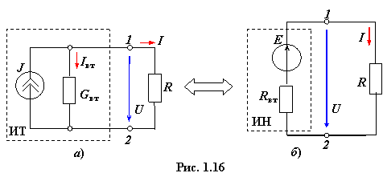

В зависимости от метода расчёта
электрической цепи источники энергии на её схеме замещения представляют или в
виде источников напряжения ИН, или в виде источников тока ИТ, причём в ходе
расчёта возникает необходимость эквивалентной замены источника тока источником
напряжения и обратно.

Пусть ИТ имеет параметры J и Gвт, ток в приёмнике равен I (рис. 1.16а).
Преобразуем его в ИН с параметрами E и Rвт (рис. 1.16б). Однако при этом ток I в приёмнике и напряжение U на его зажимах
должны остаться неизменными. Для этой цели уравнение (1.22) внешней характеристики
ИТ I = J − GвтU преобразуем в
уравнение внешней характеристики ИН, поделив все его члены на проводимость Gвт:
Откуда (1.23)
Сравнивая соотношение (1.23) с
уравнением внешней характеристики ИН: U = E − RвтI и учитывая, что напряжение и ток в
приёмнике должны быть одинаковыми для обеих схем, получим связь параметров
ИН с параметрами ИТ:
Rвт = и E = RвтJ. (1.24)
Обратное преобразование ИН в ИТ
осуществляют, пользуясь соотношениями:
Gвт = и J = GвтE. (1.25)